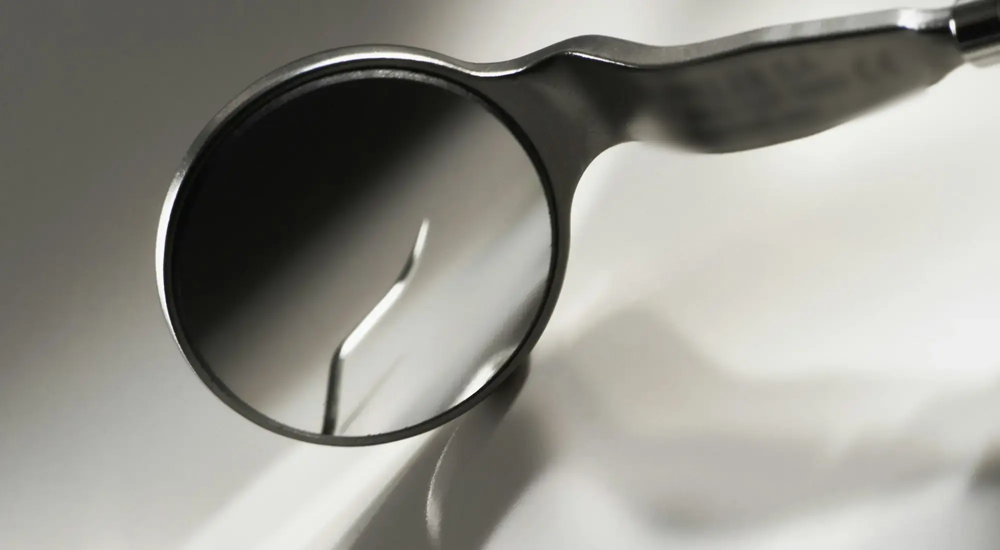
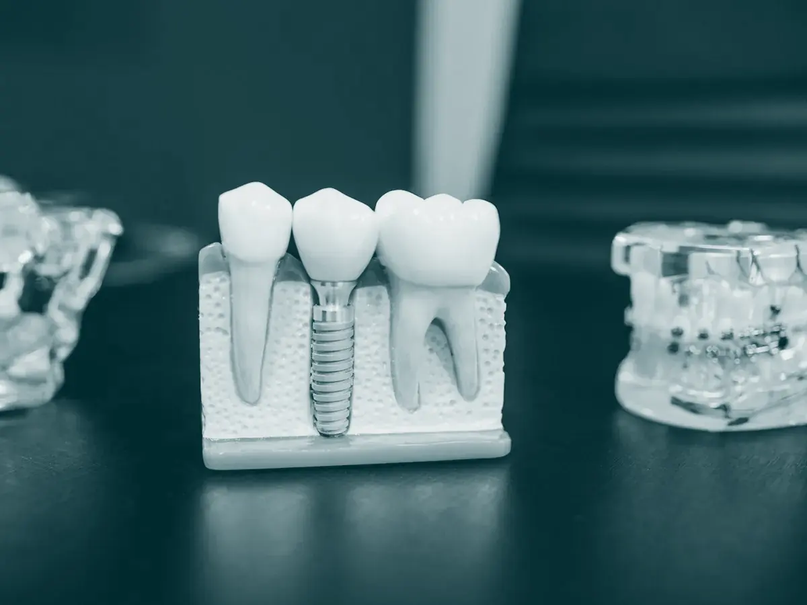

Clínica odontológica e médica em Cravinhos
Implantes, facetas, harmonização orofacial e prevenção, no Jardim Itapuã.
Nota 5,0 no Google, com 53 avaliações
Nossos tratamentos
Cada tratamento começa por uma avaliação. A indicação depende do exame de cada paciente.

- Implantes
- Substituem a raiz do dente perdido e recebem uma coroa por cima. Também planejamos próteses fixas sobre implantes. Perguntar sobre implantes
- Facetas
- Lâminas finas aplicadas na frente dos dentes para corrigir cor, formato e pequenos desalinhamentos. Perguntar sobre facetas
- Limpeza e prevenção
- Remoção de placa e tártaro e orientação de cuidados em casa. Agendar limpeza
- Outros tratamentos
- Canal, aparelho ortodôntico, clareamento e próteses: confirmar quais a clínica oferece.
O botox não muda seu rosto. Muda a forma como o tempo marca ele.
- Toxina botulínica
- Aplicada para suavizar linhas de expressão, com dose e pontos definidos na avaliação. Perguntar sobre harmonização
- Planejamento da face
- Avaliamos os traços de cada pessoa antes de indicar qualquer procedimento.
- Outros procedimentos
- Preenchimento, bioestimulador e outros: confirmar quais a clínica realiza.
Escaneamento intraoral
Usamos o scanner intraoral para registrar a arcada em imagem digital, sem a massa de moldagem.
Mais conforto
Sem a massa de moldagem na boca, que incomoda muitos pacientes.
Registro digital
A imagem da arcada fica salva e pode ser comparada nas revisões.
Planejamento
O registro ajuda a planejar implantes, facetas e próteses.
Nossa equipe
A Zemma foi fundada em 2026 por três sócios, no Jardim Itapuã.
-
Foto do Dr. José Eduardo
Dr. José Eduardo Zorzi Octaviano
Cirurgião-dentista e responsável técnico, CROSP 159480
-
Foto de Maria Fernanda
Maria Fernanda Gutierrez Neves
Função e registro profissional
-
Foto de Maria Luiza
Maria Luiza Gonçalves Bernardelli
Função e registro profissional
Nossa nota no Google é 5,0, com 53 avaliações. Ler as avaliações no Google
Dúvidas comuns
O que é o escaneamento intraoral?
É um aparelho que registra os dentes e a gengiva em imagem digital, no lugar da massa de moldagem. O registro é usado para planejar o tratamento.
Quanto tempo leva um tratamento com implante?
Depende de cada caso, principalmente da saúde da gengiva e do osso. Informamos a previsão das etapas na avaliação.
Vocês atendem convênio?
Resposta a confirmar com a clínica.
Atendem aos sábados?
De segunda a sexta, atendemos das 8h30 às 18h30. Sábado: confirmar.
Como agendo a primeira consulta?
Pelo WhatsApp (16) 99783-2441 ou pelo telefone (16) 3951-2844. Informe o que deseja tratar para reservarmos o horário adequado.
Como chegar
Rua Rufino de Almeida, 48
Jardim Itapuã, Cravinhos
- Horário
- Segunda a sexta, das 8h30 às 18h30
- Telefone e WhatsApp
- (16) 3951-2844 e (16) 99783-2441